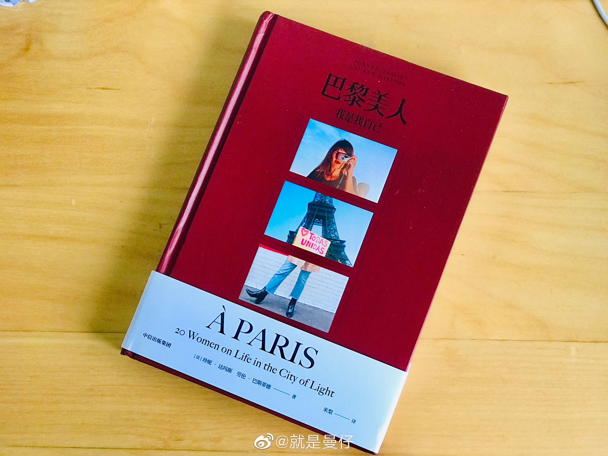
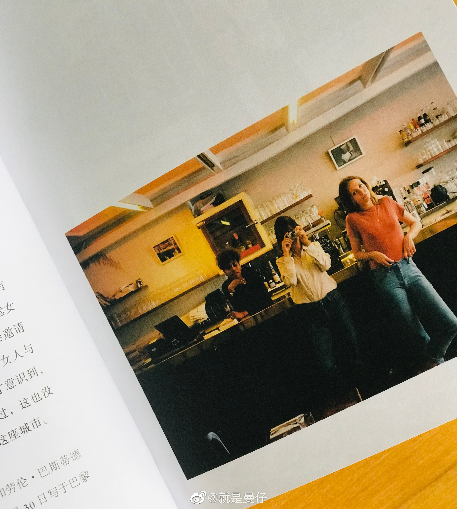
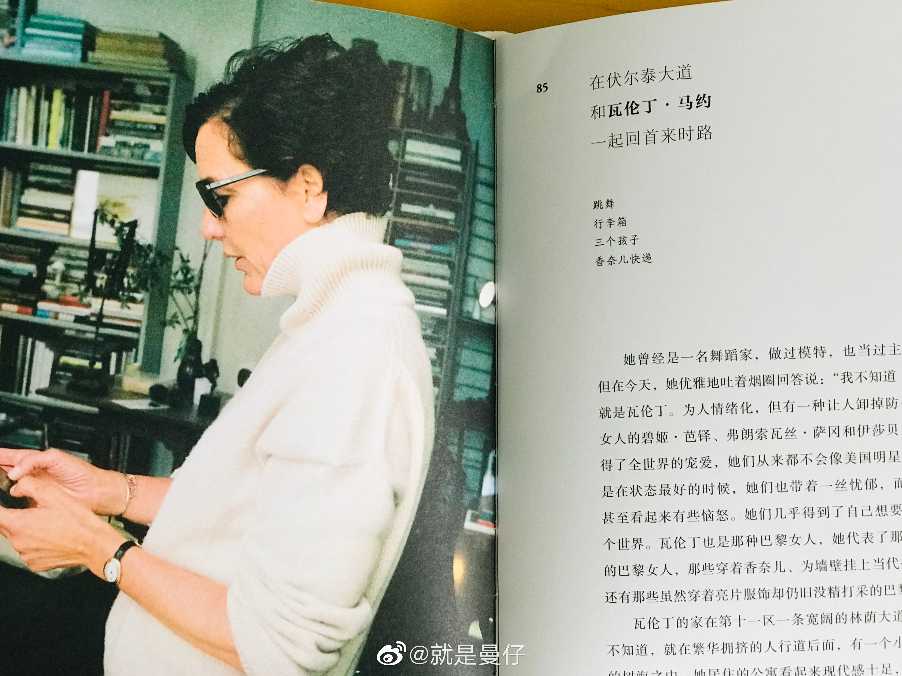

#女性#谢推荐，已翻开这本书，自序里有这句话"她们来自各行各业，拥有不同的社会背景，代表着各种文化。但是，有一种精神能够把她们结合到一起：她们全都怀有一种坚定地成为自己的自信。"
@就是曼仔:
最近读了这本《巴黎美人》，读之前真的很担心这又是一本宣扬“品位”、“格调”、“高级”、“名媛”的书，读完以后发现，作者不愧是这几年全球范围内法式风格的代言人，对法式的内核有非常精到的见解。
所谓“法式”，不仅是小碎花裙、修身风衣、雏菊发带，法式不仅是一种风格和元素，更主要的是一种不被社会陈规限制、不被他人定义的生活态度，是无拘无束的生活方式，最大限度地按照自己的本性去选择职业与感情，将自己打扮成自己满意的样子，才是真·effortless chic.
我之前写过，effortless chic的本意，包括野性生长的眉毛、不加修饰的雀斑、随意搭配的服饰，都是推崇一种不过度修饰的自然之美，但这种自然之美一旦变成了一种风格化的美学，就成了有迹可循的套路，开始出现认真修出的“野性”眉毛、精心雕琢的雀斑妆、努力不露痕迹的“随意”穿搭，看上去的effortless却与真正的chic核心南辕北辙。
所以还是希望看到更多自由自在、自得其乐的个体，而不是从一个标签跳进另一个标签，从一个人堆跳进另一个人堆。
给我看看你们的chic之美吧 然后我会从评论里选两位朋友送这本《巴黎美人》，充实你们的夏日读书计划
然后我会从评论里选两位朋友送这本《巴黎美人》，充实你们的夏日读书计划
所谓“法式”，不仅是小碎花裙、修身风衣、雏菊发带，法式不仅是一种风格和元素，更主要的是一种不被社会陈规限制、不被他人定义的生活态度，是无拘无束的生活方式，最大限度地按照自己的本性去选择职业与感情，将自己打扮成自己满意的样子，才是真·effortless chic.
我之前写过，effortless chic的本意，包括野性生长的眉毛、不加修饰的雀斑、随意搭配的服饰，都是推崇一种不过度修饰的自然之美，但这种自然之美一旦变成了一种风格化的美学，就成了有迹可循的套路，开始出现认真修出的“野性”眉毛、精心雕琢的雀斑妆、努力不露痕迹的“随意”穿搭，看上去的effortless却与真正的chic核心南辕北辙。
所以还是希望看到更多自由自在、自得其乐的个体，而不是从一个标签跳进另一个标签，从一个人堆跳进另一个人堆。
给我看看你们的chic之美吧
- 
- 
- 